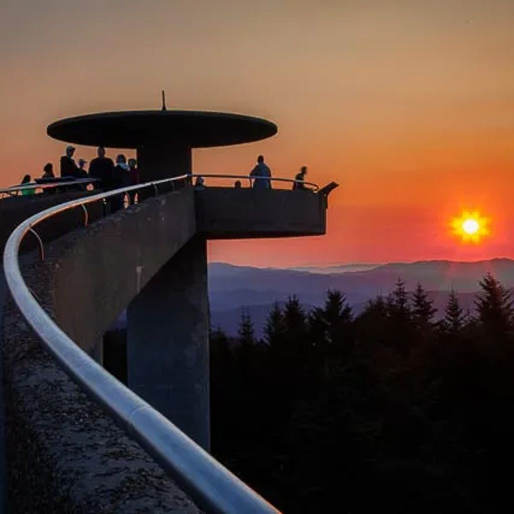

01Landmark 01 of 08
Clingman's Dome
Clingmans Dome, the highest point in the Great Smoky Mountains National Park, offers breathtaking panoramic views that are truly unmatched. This renowned spot invites visitors to ascend its observation tower and witness the stunning vistas of the Smokies. Ideal for hikers, photographers, and nature lovers, the journey to Clingmans Dome is as enchanting as the destination itself, with beautiful trails winding through lush forests. It's more than just a viewpoint; Clingmans Dome is an unforgettable experience that encapsulates the majestic beauty of the mountains.
Visit Clingman's Dome